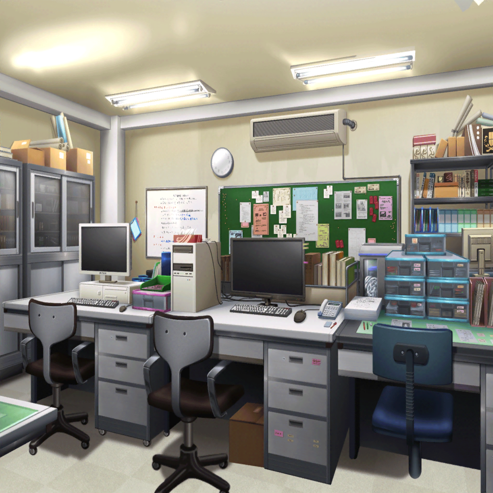

香澄
どうして……お祭りができないんですか！？
区役所職員
そんなものより、もっと有効な予算の使い方が
あるだろう
有咲
有効な予算の使い方……？
区役所職員
駅ビルを建てるんだよ。
小さなお祭りなんかより、地域活性化に役立つ
香澄
でもっ、それじゃあ商店街の人たちの気持ちは……！？
商店街の人達、みんなお祭りを楽しみにしてきたんですよ！
区役所職員
気持ち？ そんなものを大切にして、何になる？
地域の活性化において、そんなもの無意味だろう！
香澄
そんな……
沙綾
お母さんやおばあちゃんも、商店街の人たちも、
みんな楽しんできたのに……
たえ
そんなの……悲しい
りみ
お祭り、すごく楽しみにしてたのに……
区役所職員
これはもう決まったことだ。
地域活性化のために祭りはとりやめる。
他に方法はない
たえ
絵に描いたような敵役……
りみ
私たちの話きいてもらえないね……
有咲
他の方法はない、って……！
絶対お祭りをやめなくたっていい方法、あると思う
それを探すべきじゃ……！
香澄
私も、そう思います！
たえ
うん。同感
沙綾
私もです。
もっと、商店街の人たちのことも考えてみてもらえませんか？
区役所職員
ハァ……まったく、わかったようなことばかり言って……
これは君達のような子供がでしゃばる問題じゃないんだよ
有咲
なっ……！
区役所職員
これ以上君達と話すのは時間の無駄だ。
さあ、帰った帰った
りみ
ひどい……
たえ
一刀両断……
沙綾
やっぱりなにも聞いてくれない、か……
香澄
けど、このままじゃ本当にお祭りがなくなっちゃうよ〜！
どうしよう〜！？
商店街のおじさん
ごめんね、みんな。職員はいつもああいう調子で、
話を聞いてくれないんだ
沙綾
困りましたね……きっと、いい方法があるはずなのに……
有咲
沙綾、行くよ。
……ほら、みんなも
りみ
有咲ちゃん、待って！
香澄
ううー。ドキドキがモヤモヤに……
たえ
香澄、ここは一旦引く
香澄
おたえ～
たえ
よしよし
沙綾
また来ますね。それじゃあ

有咲
……思ったよりも強敵だな
沙綾
だね。
高校生の話なんか、聞くだけムダって感じだったし
たえ
テレビで見る、悪役って感じだった
りみ
他の方法はない、って断言してたね……
でも、本当にそうなのかなあ？
たえ
もっと商店街の人のこと、考えたほうがいいと思う
沙綾
私もそう思う……でも、どうすれば商店街のことを
もっと考えてくれるのかなあ……
有咲
もしかしてあの人、お祭り来たことないんじゃね？
だから商店街の人の気持ちがわからないとか
りみ
たしかに、実際にお祭りを見てみたら、
お祭りを無しにしようなんて思わないかもしれないね
有咲
……香澄、さっきから黙ってるな
りみ
……もしかして、怒ってるのかな？
沙綾
膨れっ面になってるね
りみ
香澄ちゃん、大丈夫？
香澄
ぜんぜん！
大丈夫じゃないよ！！
有咲
それだけ大きな声が出せれば、問題ないな
香澄
今ね、私モヤモヤーってしてる！
あー！ ってかんじ！
たえ
わかる。私も
香澄
キラキラやドキドキが、どこかに消えちゃいそうで……
なんとかしたいけど、でも難しくて……！
香澄
ううっ、どうすればいいんだろう〜！？